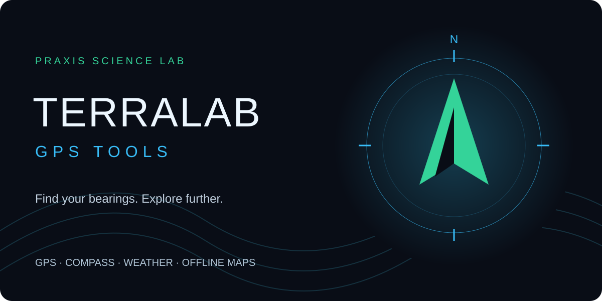
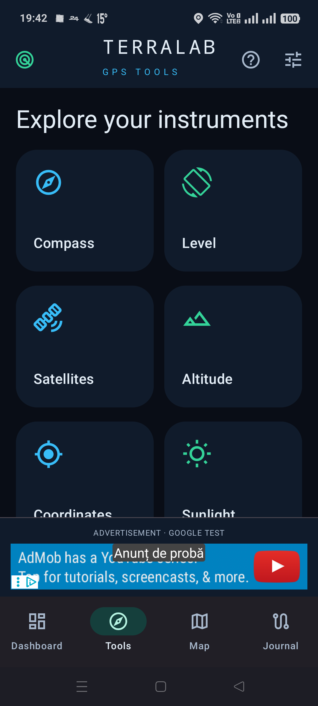
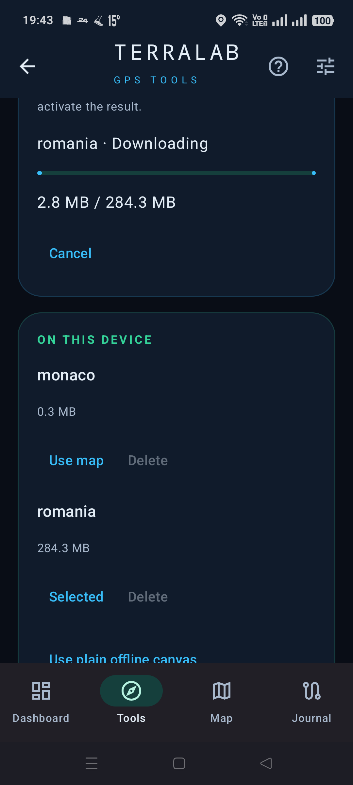
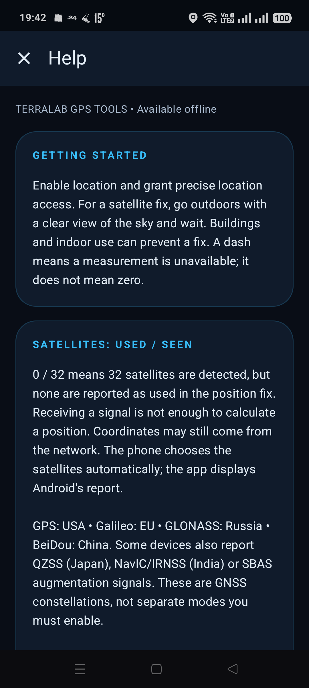

PRAXIS SCIENCE LAB / ANDROID
TerraLab GPS Tools
GPS, compass, satellites, weather and offline maps for your next journey.
In testing Not yet available on Google Play.

Screenshots
Actual screenshots from version 0.2.0 (3).



Your Android field toolkit, with a dark instrument-panel interface and direct access to location and device sensors.
Read speed, coordinates, accuracy and GPS altitude. Explore a digital compass, bubble level, GNSS skyplot and satellite signal bars. Pressure readings are available on devices with a barometer. Sunrise and sunset are calculated locally.
Record tracks with pause and resume, including screen-off recording through an Android notification. Save waypoints, review track statistics and import or export GPX files. Your routes remain on the device unless you export them.
Load a forecast from MET Norway for coordinates you choose. View temperature, wind, humidity, pressure, precipitation intervals and hourly or multi-day outlooks. The last forecast remains readable offline with its location and retrieval time. A new forecast requires internet.
Download Mapsforge country packages or import a .map file, then select it for fully offline map rendering. The current download menu includes Romania, Spain, Bulgaria, Hungary, Moldova and Monaco, with a 1 GiB limit per package. Use the map for points, tracks and approximate distance or area measurements. Online OpenStreetMap is optional.
An offline Help guide explains the instruments, satellites and available features. English, Romanian and Spanish are included.
Version 0.2.0 is a development build with Google sample banner and interstitial ads. Commercial advertising and a Google Play release are not configured.
Language
English by default. Romanian and Spanish are available in Settings; the choice is remembered.
Using the app
Satellite fixes depend on reception; detecting satellites does not mean they are used in a fix. GPS altitude uses the WGS84 ellipsoid. Weather is a model forecast, not a phone measurement. Offline maps show only their package coverage and are updated manually. No turn-by-turn routing, air-quality forecast, UV forecast or KML import is included. Measurements are approximate. Android 10 or later is required.
Praxis Science Lab is the publishing brand used by Traian Anghel. For support or privacy questions, email traiananghel@gmail.com. Include the app name and version. Do not send passwords, medical records, private recordings or other sensitive information.